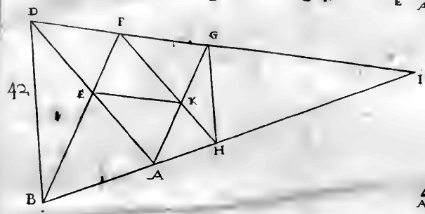

Propositio VI · Theorema VI¶


PROP. VI. THEOR. VI. (tab. 5. fig. 42, pp. 41–43)
Si latera, & basis trianguli bifariam secta sint, atque à sectione basis duae rectae indefinitae per diuisiones laterum ducantur; inde per verticem trianguli, extra ipsum, alia quaedam recta perducta secet eas lineas, quas egimus à dicto basis puncto; tandem à duobus illarum diuisionum punctis ad angulos basi
f. 0059 · p. 42adiacentes, & ad easdem partes ducantur duae aliae, erunt istae inter se parallelae.
Sit triangulum DAG, cuius & latera DA, AG, & basis DG bifariam secentur in punctis E, K, F; iunctisque FE, FK protrahantur indefinitè; ducta verò vtrinque per verticem A, recta BAH quomodocunque secante praedictas lineas indefinitas in punctis B, H, ita tamen vt tota sit extra triangulum AGD, iungantur BD, HG; dico istas parallelas inter se esse. Vel enim BH, DG sunt inter se aequidistantes; vel non; Si fuerint aequidistantes, iungatur EK, quae erit parallela ipsi DG, & propterea etiam rectae BHA. Quare cum DG ad EK sit vt DA ad AE, siue vt AD ad DE, vel BF ad FE propter suppositas parallelas; vt verò BF ad FE, ita BH ad EK; eandem proportionem habebit DG ad EK, quam BH ad eandem EK; & ideo DG, BH aequales erunt, suntque etiam aequidistantes; ergo BHGD spatium parallelogrammum erit, & adeò HG, BD erunt etiam ipsae aequidistantes: Quod si BH, DG parallelae non sint, protrahantur donec sibi occurrant in puncto I. Et quia BI ad IH componitur ex rationibus BI ad IA ad IH, recta verò BI ad IA, hoc est pondus A ad B in elemento primo, cuius grauia B, I, D, & centrum E, componitur ex rationibus grauium A ad E ad B, rectarum videlicet ED ad DA, & FB ad FE; vt verò FB ad FE, hoc est BH ad HA, vt FH ad HK ob parallelogrammum AKFB [AKFE], est BI ad IA composita ex rationibus ED ad DA, & FH ad HK. Item, quia in elemento primo, cuius grauia AIF, & centrum K, componitur IA ad IH, pondus videlicet H ad A, ex rationibus ponderum H ad K ad A, rectarum scilicet KF ad FH, & AG ad GK; vt autem AG ad GK, ita DA ad DE, componitur igitur IA ad IH ex rationibus KF ad FH, & DA ad DE; idcirco prior ratio BI ad IH fiet ex rationibus ED ad DA, FH ad HK, KF ad FH, & DA ad DE; vel ex ijsdem perturbatè sumptis, hoc est ex rationibus ED ad DA ad DE, KF ad FH ad HK; itaque vt BI ad IH, ita KF ad HK.
Rursus DI ad IG componitur ex rationibus DI ad IF ad IG: Sed in elemento primo, cuius grauia DIB, & centrum E, recta DI ad IF, hoc est pondus F ad D componitur ex rationibus ponderum F ad E ad D, rectarum scilicet EB ad BF, seu AB ad BH; imò KF ad FH, & DA ad AE, pariterque in primo elemento,
f. 0060 · p. 43cuius grauia FIA, & centrum K, recta IF ad IG componitur ex rationibus ponderum G ad K ad F, rectarum videlicet KA ad AG, & FH ad HK; ergo prior ratio DI ad IG componitur ex rationibus rectarum KF ad FH, DA ad AE, KA ad AG, & FH ad HK; vel ex ijsdem perturbato ordine, nimirum ex rationibus KF ad FH ad HK, KA ad AG, & DA ad AE, vel AG ad KA. Quare DI ad IG erit vt KF ad HK, nempe in eadem ratione in qua fuit BI ad IH; idcircò BD parallela erit eidem GH, quod &c.